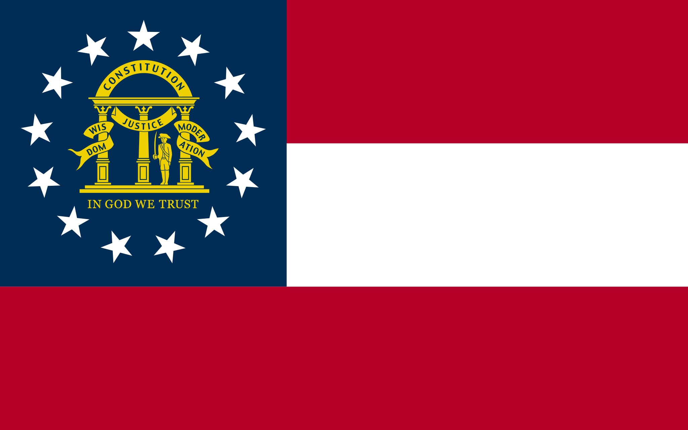
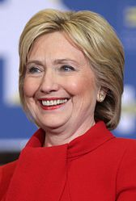
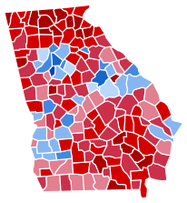
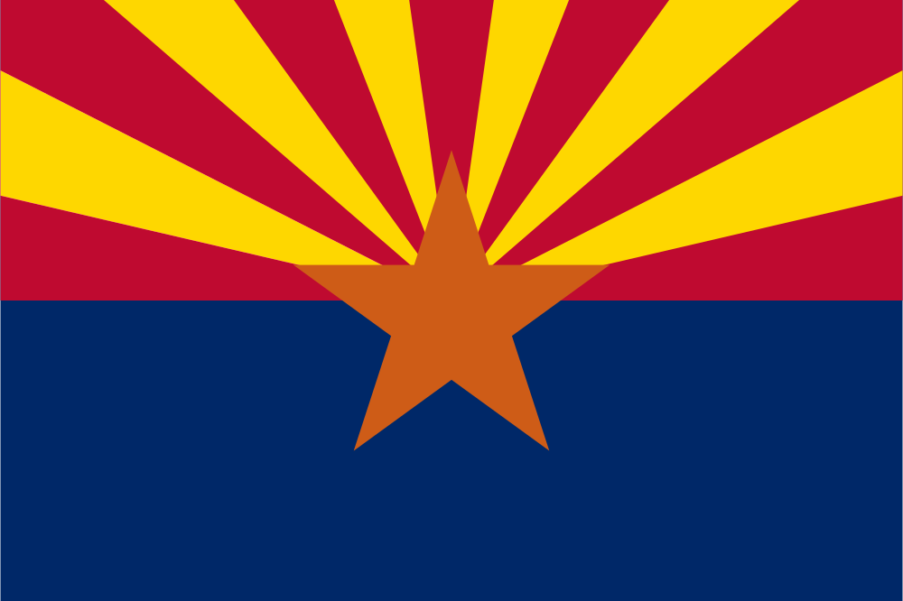
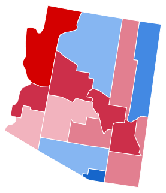
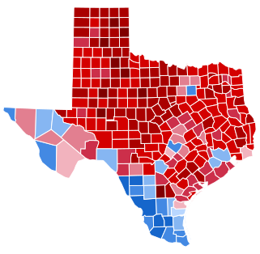

Hillary Clinton Is Doing So Well That Shes Now Campaigning in Red States
by Daniel White, October 19, 2016
"Clinton is performing well in a couple Republican strongholds where a Democrat is not traditionally expected to have a chance: Arizona and Texas. The Clinton campaign is going on the offensive in these states, buying ads and sending surrogates.
The latest Arizona Republican polling shows that Clinton is ahead of Trump by 5% in the state, up from a slight 2% lead in August. First Lady Michelle Obama, one of Clinton's most effective surrogates, is scheduled to speak Thursday in Phoenix.
In Texas, Clinton still trails Trump but she is within 3 points, according to a University of Houston survey. Since 2000, every Republican presidential candidate had taken Texas by 11% or more, according to a note accompanying the poll. The Clinton campaign has even made a modest ad buy in the Lonestar State that highlights excerpts from her endorsement by the Dallas Morning News."
Clinton goes for the kill in Arizona
By Gabriel Debenedetti 10/17/16 11:32 AM EDT
"Hillary Clinton’s campaign is making its long-rumored move into Arizona, projecting confidence as it hopes to steal a red state with a win that the campaign says would effectively end Donald Trump's chances of becoming president.
After the campaign announced over the weekend that both Chelsea Clinton and Bernie Sanders would be appearing there this week, campaign manager Robby Mook on Monday unveiled the Democrat’s next step: first lady Michelle Obama will be rallying in Phoenix on Thursday.
Speaking to reporters on a conference call, Mook said the push comes with new investment, too: $2 million in television, digital and mail advertising."
Clinton expands battleground state map with push into Arizona, Georgia
By John Wagner and Ed O'Keefe August 9, 2016
"Representatives of Hillary Clinton’s campaign phoned state Democratic leaders in Arizona and Georgia this week to alert them of plans to begin transferring funds to hire more field organizers in those states, according to several Democratic officials familiar with the calls.
Polls in both states — which Republican nominee Mitt Romney carried in 2012 — show a tightening race between Clinton and Donald Trump. The move by the Clinton campaign suggests a bid to expand the number of battleground states in play in November."
|  | ||
|  | ||
| Candidate | Donald Trump | Hillary Clinton |
|---|---|---|
| Popular Vote | 2,089,104 | 1,877,963 |
| Percentage | 51.1% | 45.9% |
|
 Georgia results by county Donald Trump Hillary Clinton |
||
|  | ||
| Candidate | Donald Trump | Hillary Clinton |
|---|---|---|
| Popular Vote | 1,252,401 | 1,161,167 |
| Percentage | 49.0% | 45.5% |
|
 Arizona results by county Donald Trump Hillary Clinton |
||
| Candidate | Donald Trump | Hillary Clinton |
|---|---|---|
| Popular Vote | 4,685,047 | 3,877,868 |
| Percentage | 52.2% | 43.2% |
|
 Texas results by county Donald Trump Hillary Clinton |
||